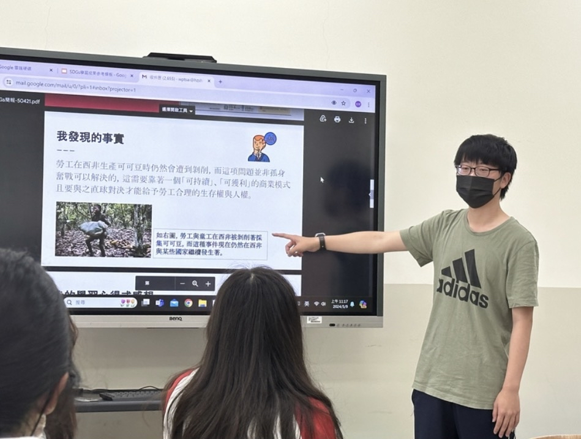
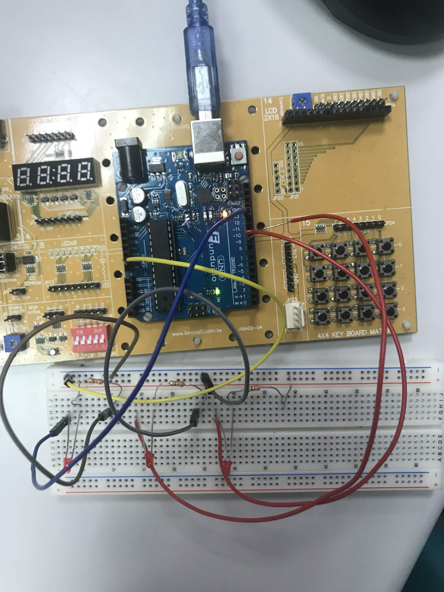
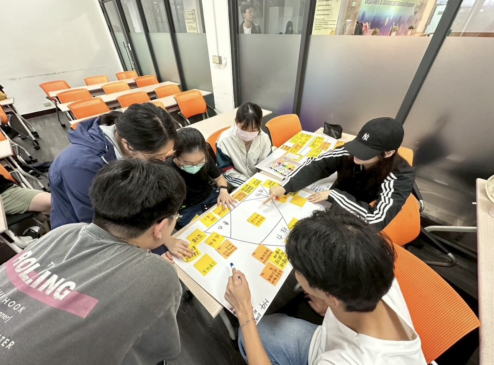
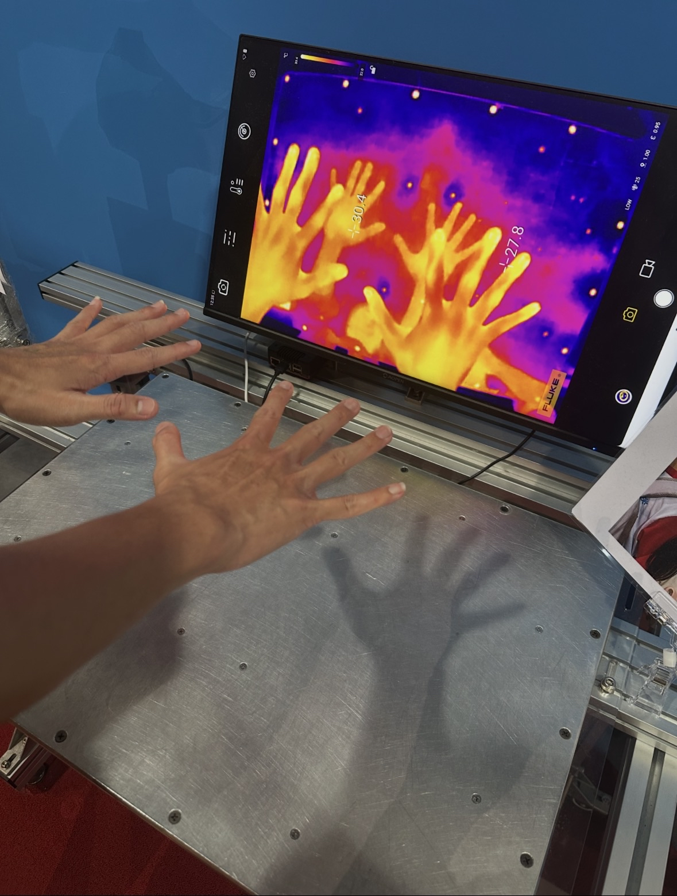
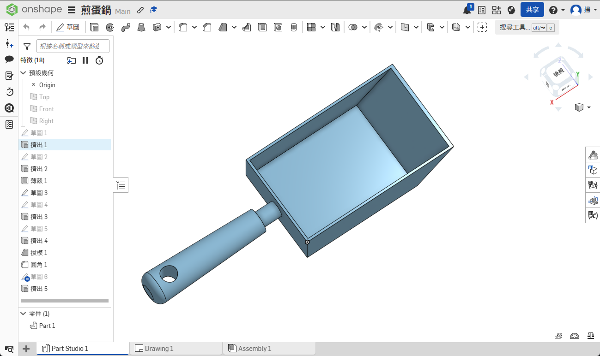

🏆 自主學習成果與作品
Portfolio為實踐理論與技術，我將所學轉化為具體成果。點擊下方圖卡可直接線上執行或瀏覽實作專案：
📸 課外學習照片展示
Activity Gallery
高中階段以SDGs作為探索方向，並在期末上台分享。

利用Arduino Uno板動手實作，此外我們也將其運用到濕度感測器與其他運用。

大一時，我們有組織性的利用下課時間討論SDGs減塑行動的比賽準備。

我們利用不分系資源學習學習認識其他工程科系的研究。

使用OnShape製作煎蛋鍋的建模，並畫出設計圖。
🔍 學習歷程與轉學動機
About & Journey現就讀於大同大學工程學院學士班（不分系）。在過去一年的跨領域摸索與實作中，我透過不分系的資源深入接觸了不同的工程學系。而後在編寫程式的邏輯推導與思考過程中找到了極大的成就感，進而明確了未來志向，決定走向資訊工程與程式科學的相關工程學系。
高中奠基階段
工程興趣啟盟與自主學習探索
自高中便對資工與電機產生濃厚興趣，提前選修了大學程式設計 (Python)、電路焊接與智慧家電實習 (Arduino) 及 3D 建模 (OnShape)。假日也曾自主加入物聯網 (IoT) 課程，利用傳感器實作各類智慧家電。在課程之外自主學習 HTML 框架嘗試搭建網頁，為未來的工程相關科系奠基基礎。
大一探索階段
工程不分系摸索：確立資工志向
進入大同不分系後，透過「工程教育」課程觀摩了各系所的經典研究（如機材系的蒸汽火車和資工系大學長的車諾比病毒程式），但我仍我尤其對資工這個科系備感興趣，因為我也體會過自己寫很久的專案在按下執行後成功運行的那種興奮感。在工程學院都必修的「計算機概論」課程中我在期末取得高分也展示了我對計算機的熱中與喜愛。課後，我也透過網路資源重新溫習 HTML/CSS 與 C 語言，並著手製作此個人與學習成果網頁。
轉學動機與契機
付諸行動：報考國立東華大學資工系
在堅定選擇資工的道路後，我開始積極精進大一所學並系統化彙整成果。在多方了解後，我發現 東華大學資工系 的師資和軟硬體資源都相當的豐富，且學風鼎盛、選課自由度高，學校遠離市區的喧囂，但在國際化發展與產學合作上都極具份量。因此我希望能加入其中並繼續深造我的學習旅程，並在未來高年級時利用東華的豐富資源完成我現有的想法與研究計畫。
🎯 校內課外活動經歷展現
Experiences🎖️ 校內簡報大賽 — 晉級決賽
以跨領域思考之題目「數位排毒」參賽，在眾多選拔選手中脫穎而出，成功爭取決賽舞台。
👥 SDGs 台灣減塑行動方案 — 競賽組長
以組長身份統籌並組織團隊，参加班際議題競賽，鍛鍊系統化領導、任務分配與跨域整合能力。
⚽ 校內足球射門大賽— 亞軍
積極參加校內與班上的團體活動，在課外培養自己的運動能力與運動家精神。
🌐 國際交流全英 SDGs 永續行動發表 — 佳作
高中時代表高中部與外語班參加國際交流，與美國姊妹校全英語研討 SDGs 解方，並在期末成果會議上台報告榮獲佳作。此議題亦成為我上大學後持續研究並發表的重點主軸。